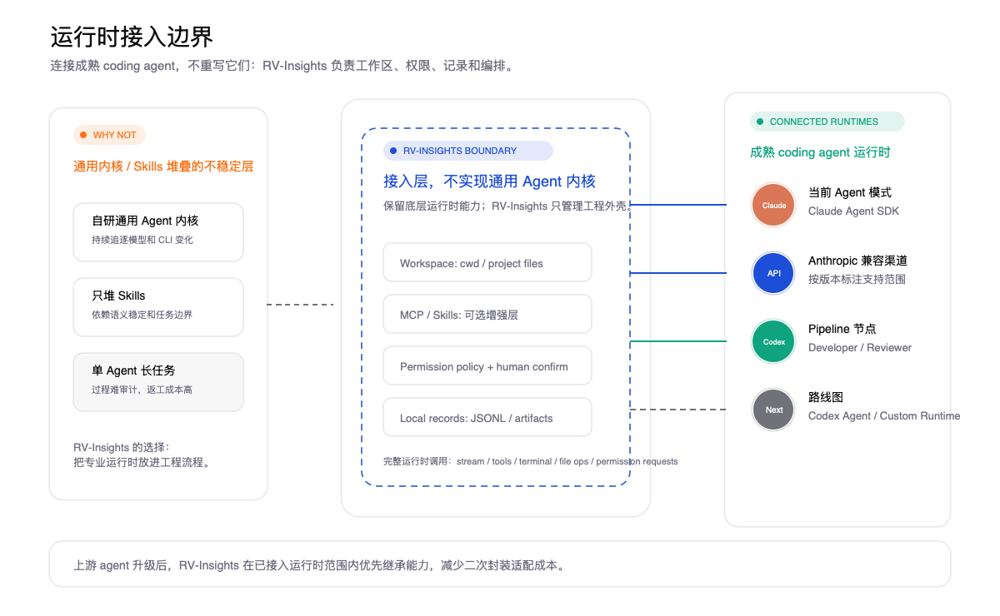
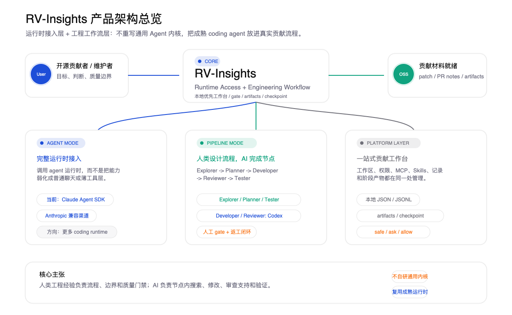
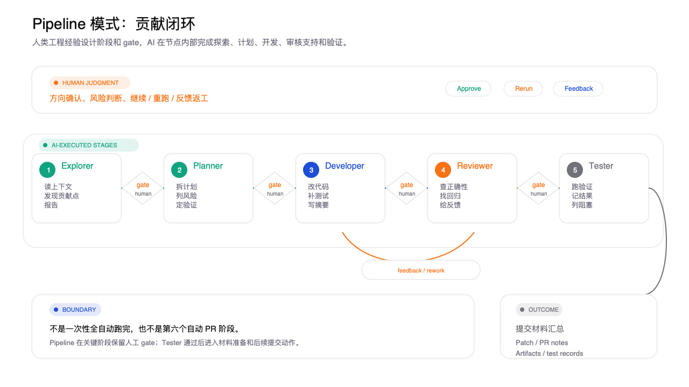
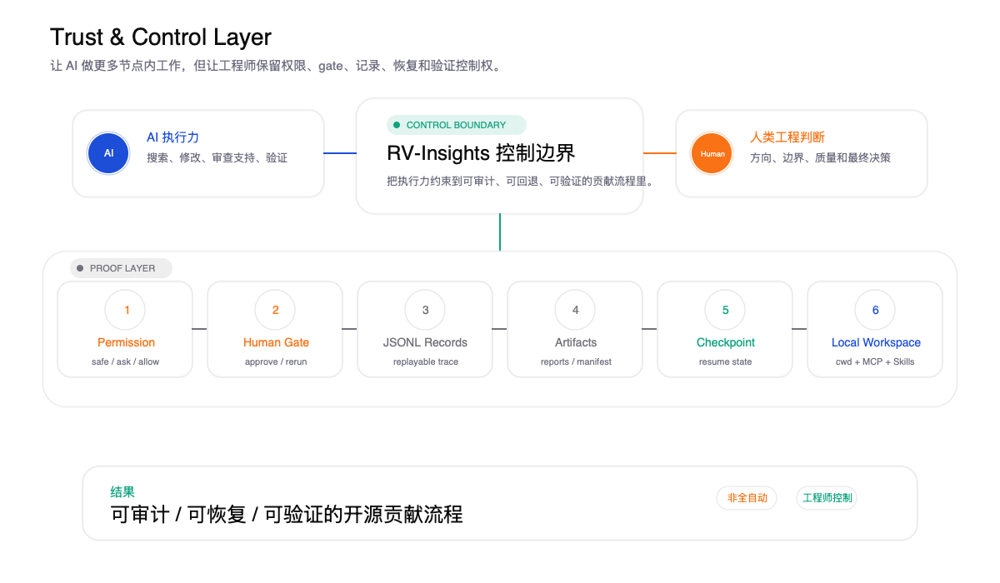

RV-Insights / technical sharing
RV-Insights 的核心不是通用 Agent 内核，而是 成熟 coding agent 运行时 + 人类工程经验 Pipeline。
01 / diagnosis
真实开源贡献的瓶颈，不是“模型能不能动手”，而是“过程能不能被人类理解、审查和恢复”。
02 / why generic wrappers drift
模型、CLI、工具协议持续变化，自研内核会变成长期适配负担。
skills 能增强上下文，但稳定性仍依赖模型理解和任务边界。
一次性跑完复杂贡献，判断、失败和返工原因会消失在输出里。
RV-Insights 的选择：不把稳定性押在薄封装上，而是押在完整运行时和工程流程上。
03 / product bet

04 / architecture

05 / agent mode
用户选择 Claude Code、Codex 等 coding agent，RV-Insights 调用完整运行时，并把执行限定在当前工作区边界内。
不是普通聊天接口，而是保留文件、终端、工具链和权限确认。
coding agent 每次升级，已接入运行时范围内尽量零适配收益。
cwd、MCP、skills、权限策略和记录绑定到当前项目。
06 / pipeline mode
找到真正值得做的贡献点。
明确边界、风险和验证路径。
修改代码、补测试、整理 diff。
审查正确性、回归和测试缺口。
执行验证，留下结果和阻塞项。
AI 做节点内工作；人类在阶段之间决定继续、重跑还是反馈返工。
07 / definition of done

08 / trust model

09 / takeaways
复用成熟 coding agent 的完整能力，减少重复适配。
把探索、规划、开发、审核、测试做成可审批 Pipeline。
用权限、记录、artifacts 和 checkpoint 保留工程控制权。